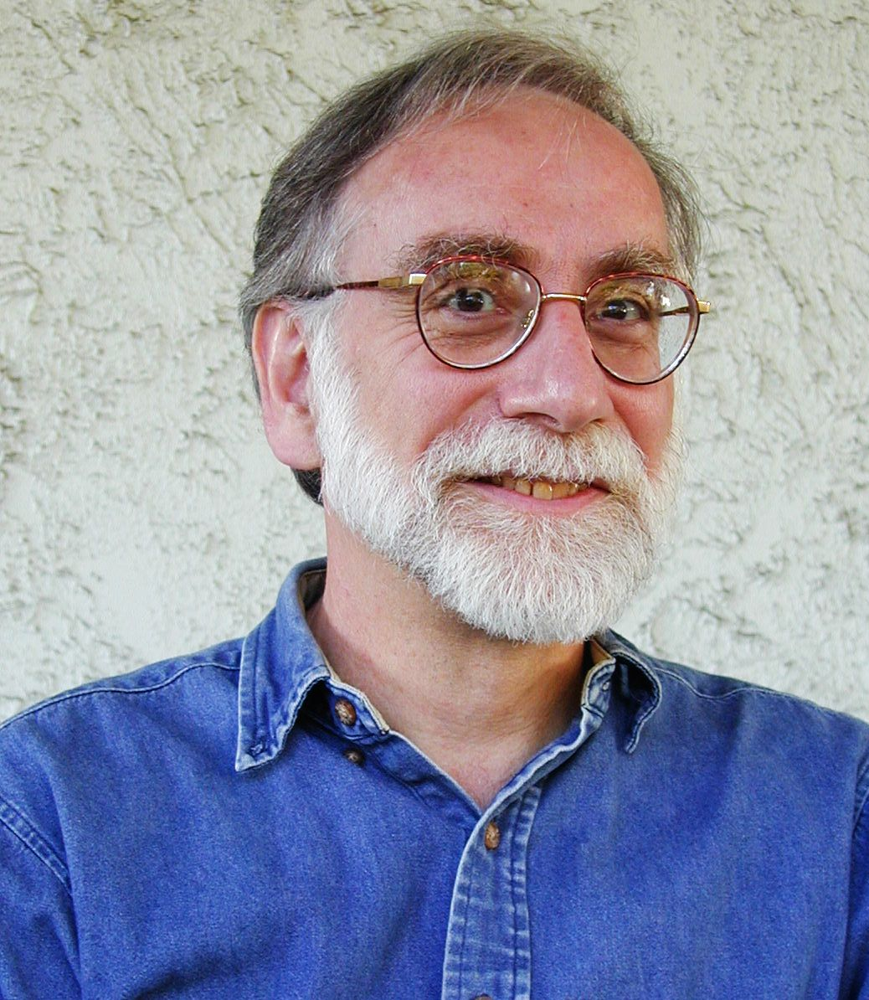

The importance of theory for researchers in Human-Computer Interaction is readily apparent in the amount of writing, learning and teaching that goes on around this topic. But what is all this knowledge for? What does theory do for us, especially in the field of HCI?
Christine Halverson posited four properties of a theory: they must be descriptive, rhetorical, inferential, and applicable. Thomas Kuhn in his landmark The Structure of Scientific Revolutions explains the need for paradigmatic theories to guide inquiry. Theories, in their explanation of the world, guide science by determining what problems people in a field should attempt to solve, and they propose ways of solving them.
This page is meant to provide a unique way to explore the major theories of Human Computer Interaction. Each theory is detailed with an overview, listing of people involved in developing and perpetuating the theory, major problems the theory attempts to solve, and the ways in which that theory solves them.
Click around and navigate either by the in-page arrows, or the arrow keys on your keyboard. Enjoy!
Herbert Simon was one of the pioneers of computer science, artificial intelligence, and HCI. A polymath, Simon delved into economics, psychology, and computer science among other disciplines. Simon is well known for his theorizing computer science as a science of the artificial. Simon's work was recognized across disciplines; he won an ACM Turing Award, an APA award for Lifetime Contributions, and a Nobel prize in Economics. Simon called Carnegie Mellon home for most of his academic career where he collaborated with Allen Newell.
Bannon, L. (1991). From Human Factors to Human Actors: The Role of Psychology and Human-Computer Interaction Studies in System Design. Design at work: cooperative design of computer systems. Routledge.
Card, S. K., Moran, T. P., & Newell, A. (1983). The psychology of human-computer interaction. Routledge.
Cooke, N. J. (1994). Varieties of knowledge elicitation techniques. International Journal of Human-Computer Studies, 41(6), 801-849. doi:10.1006/ijhc.1994.1083
Dumas, J. S., & Redish, J. (1999). A practical guide to usability testing. Intellect Books.
John, B. E., & Kieras, D. E. (1996). Using GOMS for user interface design and evaluation: which technique? ACM Transactions on Computer-Human Interaction, 3(4), 287-319. doi:10.1145/235833.236050
Kuutti, K. (1996). Activity Theory as a Potential Framework for Human-Computer Interaction Research. Context and consciousness: activity theory and human-computer interaction. MIT Press.
Norman, D. (1990). The Design of Everyday Things. Doubleday Business.
Turner. (2009). The end of cognition? Human Technology: An Interdisciplinary Journal on Humans in ICT Environments, 5(1), 5-11.
Winograd, T., & Flores, F. (1987). Understanding Computers and Cognition: A New Foundation for Design. Addison-Wesley Professional.
Halverson, C. A. (2002). Activity theory and distributed cognition: Or, what does CSCW need to do with theories? Computer Supported Cooperative Work, 11, 243-267
Hollan, J., Hutchins, E., & Kirsh, D. (2000). Distributed cognition: Toward a new foundation for human-computer interaction research. ACM Transactions on Computer-Human Interaction: 7(2), 174-196.
Hutchins, E. L. 1995. How a cockpit remembers its speed. Cogn. Sci. 19, 265-288.
Hutchins, E. (1995). Cognition in the wild. Cambridge, MA: The MIT Press.
Perry, M. (2003) Distributed Cognition. HCI Models, Theories, and Frameworks: Toward a Multidisciplinary Science. Carroll, John M. (Ed.) Morgan Kaufmann Publishers: San Francisco, CA.
Diaper, D., & Lindgaard, G. (2008). West
meets East: Adapting Activity Theory for HCI & CSCW applications? Interacting
with Computers, 20(2), 240-246.
doi:10.1016/j.intcom.2007.11.
Kaptelinin, V., & Nardi, B. A. (2006). Acting with technology. Technology. MIT Press.
Kaptelinin, Victor, Nardi, B. A., & Macaulay, C. (1999). Methods & tools: The activity checklist: a tool for representing the "space" of context. interactions, 6(4), 27-39. doi:10.1145/306412.306431
Kuutti, K. (1996). Activity Theory as a Potential Framework for Human-Computer Interaction Research. Context and consciousness: activity theory and human-computer interaction. MIT Press.
Nardi, Bonnie A., Miller, J. R., & Wright, D. J. (1998). Collaborative, programmable intelligent agents. Communications of the ACM, 41(3), 96-104. doi:10.1145/272287.272331
De Freitas, S. (2009). Clarisse De Souza "The Semiotic Engineer". Use 8. Retrieved Feb 26, 2012, from http://www.use8.net/magazine.php?ArticleId=98
De Souza, C. S., Barbosa, S. D. J., & Prates, R. O. (2001). A semiotic engineering approach to HCI. CHI '01 extended abstracts on Human factors in computing systems - CHI '01 (p. 55). New York, New York, USA: ACM Press. doi:10.1145/634067.634104
De Souza, C. S. (2005). Introduction. The semiotic engineering of human-computer interaction (pp. 3-34). Cambridge: The MIT Press.
De Souza, C. S., & Leitao, C. F. (2009). Semiotic engineering methods for scientific research in HCI. Synthesis Lectures on Human-Centered Informatics (Vol. 2, pp. 1-122). Morgan & Claypool Publishers.
De Souza, C. S., Leitao, C. F., Prates, R. O., Amelia Bim, S., & Da Silva, E. J. (2010). Can inspection methods generate valid new knowledge in HCI? The case of semiotic inspection. International Journal of Human-Computer Studies, 68(1-2), 22-40. doi:10.1016/j.ijhcs.2009.08.006
De Souza, C. S. (2011). The semiotic turn. Journal of Visual Languages & Computing, 1-4. Elsevier. doi:10.1016/j.jvlc.2011.11.008
Gantt, M. and Nardi, B. (1992). Gardeners and gurus: Patterns of collaboration among CAD users. Proceedings of the ACM Conference on Human Factors in Computer Systems. Pp. 107-117.
Kraut, R. E. (2002). Applying Social Psychological Theory to the Problems of Group Work. Chapter in Theories in Human Computer Interaction. (pp. 325-356) New York: Morgan-Kaufmann Publishers
Orlikowski, W. J. (2007). Sociomaterial Practices: Exploring Technology at Work. Organization Studies, 28(9), 1435-1448.
Nardi, B. and O'Day, V. (1999). Information Ecologies: Using Technology with Heart. Cambridge, MA: MIT
Kraut, R. E. & Resnick, P. (2012). Building successful online communities: Evidence-based social design. Cambridge, MA: MIT Press.
This project was created for UW Human Centered Design & Engineering class HCDE501: Theoretical Foundations of Human Centered Design & Engineering
The course was completed in Winter 2012 and was taught by Professor Mark Zachry
This website was created by:
Cognitive psychology is one of the original theories undergirding HCI and continues to be influential today. In the first half of the 20th century, behaviorism was the dominant paradigm in psychology, which was primarily interested in analyzing human behavior. The cognitive revolution of the 1950s eventually supplanted behaviorism - the cognitive psychology perspective was more interested in different aspects of mental processing: memory, perception, language processing, problem solving, attention, learning, and performance. This logical perspective guided HCI until the post-cognitivist revolution of the mid 1990s.
Don Norman was a pioneer in cognitive psychology as it applies to HCI and is still a prolific speaker and writer in the HCI community. Norman spent much of his early career studying cognitive psychology and wrote one of the landmark texts for HCI, The Design of Everyday Things. In the book Norman introduced the many concepts to the general public including mental models, system models, and affordances. Norman, considered a founder of Human-Centered Design now pulls heavily from activity theory and questions if HCD is the best paradigm for guiding systems design.
Usability testing is perhaps the most well-known method in human-computer interaction. It is an empirical technique for measuring the usability of a computer system, defined as the ability of users to quickly and easily accomplish their tasks. The testing processing begins with a planning step, where stakeholders agree on the goals of the test, determining the relevant types of participants to test with, screening and recruiting participants, determining what tasks to test and creating task scenarios, and conducting a test pilot. This is followed by the usability testing itself, which is typically conducted in a usability lab with test hardware and software set up for the task scenarios and audio, video and datalogger equipment set up to record the test. During the test, participants are often instructed to use the think-out-loud protocol, which means they verbalize their thought process as they attempt the task for the benefit of the researchers. The data from the tests is collected and analyzed to produce a final report detailing the findings, which typically include parts of the tested system that users found difficult or confusing and recommendations for fixing them.
GOMS (Goals, Operators, Methods and Selection rules) is a family of methods for measuring the amount of time it takes for a user to complete a goal. These methods analyzes goals: what the user intends to accomplish; operators: actions and processes that the user takes to progress towards a goal; methods: a set of operators that have subordinate goals within the larger goal; and selection rules: the means by which users choose one method over another. This method of analysis begins by breaking down a goal (like renaming a file in Windows Explorer) into several sub-goals (finding the file, selecting the file, activating the rename function, etc.). Then, the operations for achieving each goal are measured by observing users – these operations are organized into a classic input-processing-output model of human cognition and each is measured separately. The measurements are summed to produce high, low and modal average time.
Distributed Cognition or DCog utilizes the methods and theories of Cognitive Science but expands the unit of analysis to include cognitive process outside of the individual to include whole systems. DCog posits that cognition can be distributed across numerous individuals, artifacts, environments, and even time. It also states that cognition is situated in a sociocultural context that has a deep impact on the system as a whole. The understanding of this context is crucial as DCog considers this context as indistinguishable from the cognitive system as a whole. Essentially, DCog is not limited to the processes occurring within the brain.
The main figure of DCog, and in fact its creator is Edwin Hutchins. Hutchins is known as the father of DCog and proposed the theory after performing extensive ethnographic studies of naval activity such as ship navigation and docking procedures. Hutchins background is initially in anthropology, however he slowly shifted to cognitive science through the usage of cognitive ethnography and involvement with HCI. The seminal publication of DCog is Hutchins’s book Cognition in the Wild (1995) where he discusses the origins of formation of DCog into a framework for HCI. Hutchins went on to found the Distributed Cognition and HCI Lab and research group at UC San Diego. He currently still a professor at UC San Diego.
A research paper focused on airline cockpit’s and the interactions which take place to pilot a commercial aircraft. The main contention of this paper is that the cognitive properties of distributed systems can differ radically from those of the individuals which inhabit them. Hutchins begins by stressing that the DCog approach is very similar to and evolves from the traditional cognitive science approach. This means that many of the same methods can be used and applied, but at an expanded level of analysis. Hutchins also points out that by expanding the unit of analysis to that of a whole system, much of the process can be observed directly in the real world in the form of direct interaction and manipulation, rather than attempting to infer mental processes as in cognitive science.
To begin the study, Hutchins observed over 100 commercial airline flights from the cockpit. The focus of the observations in the context of this case study was on how air speed and wing configuration information is handled in the cockpit, specifically on landing approach. From his observations Hutchins was able to identify the inputs, outputs and processes of the cockpit and how they transformed the representations and states of both the individuals involved and the system as a whole.
Through analysis he was able to clearly delineate how each individual in the cockpit performed tasks in cooperation to safely follow procedure and land the plane. One example from his analysis was that at times when cockpit workload is low, the co-pilot creates a “speed bug” based on predicted landing conditions to provide the pilot with the proper configuration and speed for landing. By calculating these tasks before landing procedure the co-pilot passes memory and cognition to the “speed bug” so that when it is needed the pilot can use it as a baseline for landing.
The main method for studying DCog is deep ethnographic study with a focus on cognition. This is often referred to as Cognitive Ethnography or as Hutchins dubbed it ethnography “in the wild”. The focus of this method is to study the relationships of elements of a system (individuals, artifacts, sociocultural) in their actual context of use. By utilizing study of subjects “in the wild” DCog avoids the pitfalls of decontextualization of activities as seen in traditional Cognitive Science studies which occur in a lab.
Hutchins and other advocates of DCog also emphasize the importance of a deep knowledge of the subject of study and suggest that one must be an expert in this field in order to truly understand the system and its relationships. They stress that one must be familiar with the existing processes, norms and vocabulary so they can “speak the language” of the system and understand what is going on, while it is going on.
From this ethnographic data, the DCog framework focuses on identifying the inputs, outputs in the interaction and using this to determine the representations (both internal and external) and processes of the system. This analysis is completed on not only individuals in the system, but also artifacts such as tools and the environment. In DCog artifacts can be considered symmetrical to humans in their ability to cognate and affect both representational states and memory of the individuals, the system as a whole and other artifacts involved.
This theory originated in the Soviet Union in the 1920s. In the early 1990s, it was proposed as a foundational theory for guiding HCI research beyond cognitive science. Like many post-cognitivist theories, activity theory breaks from the cognitivist assumption that cognition occurs solely inside the brain and holds that this is best understood as occurring in the activities of people. Leading advocates of this theory believe its primary value is in orienting designers and researchers and helping them ask the right questions.
Bonnie Nardi is major proponent of Activity Theory and is well known for her work and publications advocating its usage in HCI. Nardi is specifically interested in Activity Theory’s usage in regards to interaction and interface design in collaboration environments. Along with Victor Kaptelinin she made the case for Activity Theory in this realm in the book Acting with Technology: Activity Theory and Interaction Design. Nardi is also well known for her work researching and analyzing virtual worlds, specifically online game worlds such as World of Warcraft. She is currently a professor at UC Irvine in the department of Informatics where she continues to publish in the fields of CSCW and CMC.
Apple Data Detectors is a technology invented at Apple’s Advanced Technology Group in the mid-90s and was a feature of Mac OS 8 and is currently present in iOS 3.0+ and OS X 10.5+. This technology detects structured data in text files – phone numbers, addresses, appointments, email addresses, URLs, ship tracking numbers, etc. – and allows users to import that data in a structured form into other applications like a browser, calendar, address book and so on. In an article for Interactions, Kaptelinin, Nardi and Macaulay describe the application of the activity checklist to this project.
Since the checklist encourages designers to choose the most relevant factors to apply to a given project, they selected the Learning/Cognition/Articulation and Development sections. These two categories of factors asks designers to attend to factors of the system like “Components of target actions that are to be internalized”, “Time and effort necessary to learn how to use existing technology” and “Use of tools at various stages of target action life-cycle”. This guided the design of the system to support end-user programming, providing a means for users to develop from simple use of technology to more sophisticated building it themselves.
In the Means/Ends categories, the designers found that user goals require more complex detectors, like the ability to import complete addresses rather than just city and country names.
The Activity Checklist consists of a set of 37 factors that activity theory regards as important for understanding the “contextual design space” of a given technological system that researchers would like to study. These factors are divided into four categories that correspond to aspects of the theory: Means/Ends, which contains factors related to the hierarchical structure of activity and asks questions about how the system supports user goals; Environment, including factors related to object-orientedness, and looks at different aspects of the users environment beyond the system itself; Learning/Cognition/Articulation, which refers to the principle of internalization/externalization and the aspects of the system that support this aspect; and Development, which considers temporal changes in the system and the previous three categories. These factors have two variations: an evaluation version which is intended as a tool for evaluating existing technologies; and a design version, which is intended to be used by designers for a system they are preparing to build or are in the early stages of building.
In addition to these factors, the checklist includes a preamble which summarizes the principles underlying the categories, and sample questions that provide a guide for mapping the factors to aspects of the system that’s being investigated.
Semiotic engineering began as an approach for designing the language of user interfaces and was rooted in research conducted in the 1980s by Brazilian HCI researchers. In 2005, de Souza published The Semiotic Engineering of Human-Computer Interaction outlining a complete semiotic approach to HCI. Semiotics is the study of signs and signification, so this theory views technological products as forms of communication which are interpreted by users.
Clarisee Sieckenius de Souza is the founder of Semiotic Engineering. With a background in Portuguese and Linguistics, de Souza brings a unique perspective to HCI, modeling it as a conversation between stakeholders. Based in Brazil, de Souza also adds to the international collaboration of HCI. In 2005 she published the foundational book of Semiotic Engineering, The Semiotic Engineering of Human Computer Interaction. In 2010, she was a co-winner of the ACM SIGDOC Rigo award for lifetime contribution to the field of communication design.
In Semiotic Engineering Methods, De Souza provides a case study of the application of SIM to Audacity, a popular open-source digital audio processing application. Beginning with the Preparation phase, the researchers identified the intended users by investigating materials presented on the Audacity web site, determining their interests and sophistication. This information was used to produce an inspection scenario – a narrative describing a motivation and tasks that are used to contextualize the inspection. In this case, the scenario describes a set of tasks related to creating a cell phone ring tone.
The first step of SIM is analysis of metalinguistic signs, which includes the web site, software start-up welcome message, and various types of documentation. Based on analysis at this level, she found inconsistent messages addressed to users – some text assumed they were computer illiterate, but familiar with digital audio processing concepts, and other text assumed the reverse.
The second step is the analysis of static signs – elements of the interface which remain constant while it is being used. De Souza inferred what designers assumed who the users of Audacity are, and their needs and wants, and found that designers were consistent in believing users preferred direct manipulation interfaces. In the third step of the analysis, she notes several inconsistencies at the level of dynamic signs such as how Import and Open commands behave the same, but Save and Export behave differently.
In the remaining steps, De Souza combines the three levels of analysis and finds that the interface reveals important insights into the organization of the development team, and also notes a lack of consistency across all the levels.
Semiotic Inspection Method is a formalized approach to inspecting user interfaces aimed at producing valid knowledge rather than opinions. It is focused on the metacommunication intended by designers and expressed by the interface. SIM consists of five steps preceded by preparation by identifying the research question, the users and the top-level goals of the system. The first three steps are iterative and deconstructive, breaking down the design message into three classes of signs: metalinguistic signs, which is language that describes signs that operate the system, including documentation, error and help messages, tips, etc.; static signs which encompass fixed elements of the interface; and dynamic signs, those whose meanings develop over time. The fourth step is collate and compare, where the classes of signs are evaluated for consistency and completeness, and the fifth step involves evaluating the effects of the observations made in step four on the communicability of the system.
Communicability Evaluation Method is a way to evaluate the way designers’ metacommunication is received by users. This has some similarities to usability testing, but is focused on the consistency and coherence of the communication which may be poor even if the task is successful. There are three steps to CEM: tagging, the phase where the researcher tags utterances by users while they are using a system of 13 possible tags; interpretation, where the researcher analyzes the tags to discover frequency, patterns, grade and cause of problems; and semiotic profile, in which the researcher summarizes and characterizes the metacommunication
Social Psychology
Social psychology is a sub-field of psychology which studies the effect of social interactions on group and individual behavior. While not native to HCI, social psychology has been widely applied to the field, especially in the study of Computer-Supported Cooperative Work (CSCW). Rather than being a single, unified theory like activity theory or distributed cognition, social psychology refers to a group of loosely tied theories which make observations and predictions about group behavior.
Central Tenets
Strengths and Weaknesses
Social Psychology
Key Figure
Robert Kraut began his academic career in social psychology. Spending several years as an assistant professor with stints at Bell research, Kraut finally landed at Carnegie Mellon where he is now a faculty member of the Human Computer Interaction Institute. Kraut is known for taking the findings of social psychology and applying them to the design of online systems for groups. Kraut has taken concepts such as social loafing, and process losses and used them to provide design guidelines for creating productive online groups.
Other Contributers
Social Psychology
Case Studies
Social psychology focuses on problems of group coordination and interaction. Practitioners study group dynamics and production and seek for ways to increase productivity and group maintenance. Examples of applications of social psychology include:
Robert Kraut presents a case study of how to address under-contribution in online groups. Kraut presents specific design intervention to promote group identifiably, attractiveness of tasks, attractiveness of group, manage group size, and maintain the uniqueness of individual contributions. Kraut’s latest book Building Successful Online Communities Kraut details numerous best-practicies for online groups.
Wanda Orlikowsi used an observational study to note how the introduction of BlackBerry phones into an organization cultivated a culture of never ending work. New social norms developed around the acceptable time to delay responding to an email. Users noted how they felt distress when not answering their devices, or an inability to put them down.
Bonnie Nardi noted in her book Information Ecologies how researchers interacted with cooperate librarians. Her study brings to light different relationships between researchers and librarians and speaks of librarians as “gardeners” who cultivate an information ecology.
Social Psychology
Methods
Methods of inquiry in social psychology match those of psychology on the whole and include: